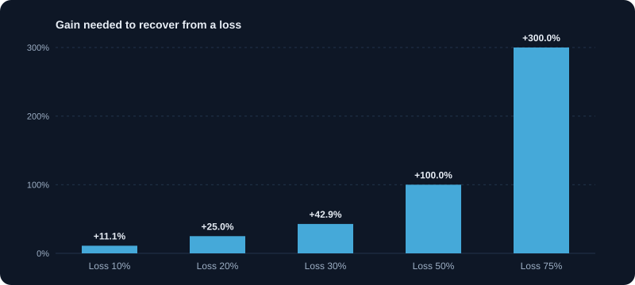

जोखिम प्रबंधन
पोज़िशन साइज़, स्टॉप लॉस, एक्सपोज़र सीमा और ड्रॉडाउन योजना से पूँजी की रक्षा करें।
1. जोखिम प्रबंधन पहले क्यों
जोखिम प्रबंधन तय करता है कि आप इतने समय तक टिके रहें कि आपकी बढ़त काम कर सके। हर ट्रेडर के घाटे वाले ट्रेड होते हैं, और सवाल यह नहीं कि आप हारेंगे या नहीं, बल्कि यह कि हर नुकसान कितना महँगा है और कितने लगातार नुकसान आप झेल सकते हैं। अच्छा जोखिम प्रबंधन नुकसान को छोटा और झेलने योग्य रखता है, ताकि योजना को नतीजे देने का समय मिले।
2. ड्रॉडाउन: नुकसान का गणित
नुकसान बराबर के लाभ से ज़्यादा चोट देता है, क्योंकि वापसी का प्रतिशत नुकसान से तेज़ बढ़ता है। 10% नुकसान की भरपाई के लिए 11.1% चाहिए। 20% नुकसान के लिए 25%। 50% नुकसान के लिए 100%। 75% नुकसान के लिए 300%। इसलिए पूँजी बचाना किसी भी ट्रेडिंग योजना का पहला काम है।
- 10% नुकसान → 11.1% लाभ चाहिए
- 20% नुकसान → 25% लाभ चाहिए
- 30% नुकसान → 42.9% लाभ चाहिए
- 50% नुकसान → 100% लाभ चाहिए
- 75% नुकसान → 300% लाभ चाहिए
3. प्रति ट्रेड जोखिम: केंद्रीय नियम
हर ट्रेड पर पूँजी का एक तय छोटा प्रतिशत जोखिम लें, आमतौर पर 0.5% से 2%। इससे हर ट्रेड एक छोटी घटना बनता है। हर बार 2% पर लगातार दस नुकसान पूँजी को लगभग 18% घटाते हैं। वही दस नुकसान 0.5% पर लगभग 5% घटाते हैं। छोटा जोखिम सीखने और मानसिक रूप से संभलने का समय देता है।
4. पोज़िशन साइज़: जोखिम को शेयरों में बदलना
पोज़िशन साइज़ = जोखिम की रकम ÷ प्रति शेयर जोखिम (एंट्री से स्टॉप तक की दूरी)। इससे आपका जोखिम नियम शेयरों की संख्या में बदल जाता है।
उदाहरण: पूँजी ₹5,00,000, जोखिम 1% = ₹5,000। स्टॉप की दूरी प्रति शेयर ₹20। साइज़ = 5,000 ÷ 20 = 250 शेयर। ₹400 प्रति शेयर पर पोज़िशन ₹1,00,000 की है, यानी पूँजी का 20%। स्टॉप पर नुकसान फिर भी केवल ₹5,000।
5. जोखिम-इनाम और जीत दर एक साथ
अगर आपके विजेता ट्रेड हारने वालों से बड़े हों, तो ऊँची जीत दर ज़रूरी नहीं। 1:2 जोखिम-इनाम वाली प्रणाली को शुल्क से पहले ब्रेक-ईवन के लिए लगभग तीन में से एक ट्रेड जीतना काफ़ी है। 1:1 वाली प्रणाली को 50% से ऊपर जीत दर चाहिए। प्रणाली को उसकी अपेक्षित वैल्यू (expectancy) से परखें: (जीत दर × औसत लाभ) − (हार दर × औसत नुकसान)।
उदाहरण: जीत दर 40%, औसत लाभ 2R, औसत नुकसान 1R। Expectancy = 0.4 × 2 − 0.6 × 1 = प्रति ट्रेड +0.2R। 100 ट्रेड में यह शुल्क से पहले +20R है।
6. एक्सपोज़र: कुल जोखिम, केवल एक ट्रेड का नहीं
एक साथ चलने वाले बैंकिंग शेयरों में पाँच ट्रेड, हर एक 1%, लगभग सेक्टर पर एक 5% दाँव हैं। सभी खुली पोज़िशन का कुल जोखिम गिनें, और किसी एक सेक्टर या थीम पर सीमा रखें (उदाहरण: कुल खुला जोखिम पूँजी का 6%, और एक सेक्टर में 3% से ज़्यादा नहीं)।
- कुल खुला जोखिम: सभी खुली पोज़िशन पर जोखिम का योग।
- सहसंबंध: एक ही सेक्टर या इंडेक्स के शेयर अक्सर साथ गिरते हैं।
- नकद बफ़र: पूँजी का कुछ हिस्सा बिना निवेश के रखने से कार्रवाई की जगह और मजबूरी के फ़ैसले कम होते हैं।
7. ड्रॉडाउन नियम: गलत होने पर क्या करें
ख़राब दौर से पहले नियम तय करें। ड्रॉडाउन नियम बताता है कि नुकसान जमा होने पर क्या करना है, ताकि भावना फ़ैसला न करे।
- मासिक नुकसान सीमा: अगर महीने का नुकसान तय स्तर (जैसे पूँजी का 5%) पहुँचे, तो अगले महीने तक ट्रेडिंग रोकें और समीक्षा करें।
- लगातार नुकसान नियम: तीन नुकसान के बाद, एक जीत तक पोज़िशन साइज़ आधा करें।
- खाता ड्रॉडाउन नियम: शिखर से 15% गिरावट पर रुकें, जर्नल की समीक्षा करें, और छोटे साइज़ के साथ लौटें।
- नुकसान की भरपाई के लिए घाटे वाली पोज़िशन में कभी न जोड़ें। यहीं से छोटा नुकसान बड़ा बनता है।
8. स्टॉप-लॉस जो जोखिम से मेल खाए
स्टॉप-लॉस वहाँ लगे जहाँ आपका विचार ग़लत हो, न कि जहाँ नुकसान सहना आसान हो। अगर तार्किक स्टॉप आपके जोखिम नियम के लिए बहुत दूर है, तो पोज़िशन बहुत बड़ी है या ट्रेड उपयुक्त नहीं। स्टॉप चौड़ा करने के बजाय ट्रेड छोड़ दें। अस्थिरता पर आधारित स्टॉप (जैसे 2 गुना ATR) सामान्य दैनिक चाल का हिसाब रखते हैं।
9. लीवरेज और मार्जिन: जोखिम का गुणक
लीवरेज लाभ और नुकसान दोनों को गुणा करता है। 5 गुना मार्जिन पर पूरी पोज़िशन पर 2% विपरीत चाल आपकी नकद पर 10% नुकसान है। मार्जिन कॉल आपको सबसे ख़राब कीमत पर बाहर निकाल सकती है। लीवरेज इस्तेमाल करें तो प्रति ट्रेड जोखिम घटाएँ, ताकि स्टॉप पर नुकसान अब भी आपकी तय रकम हो।
10. जोखिम का मनोविज्ञान
ज़्यादातर ट्रेडर नुकसान के बाद, जीत के बाद, या टारगेट के पास होने पर नियम तोड़ते हैं। नियम लिखें, उन्हें दिखने वाली जगह पर रखें, और हर नियम तोड़ने को गंभीर गलती मानकर समीक्षा करें। नियम आपको अपने ही आवेगों से बचाने के लिए हैं।
11. हर ट्रेड से पहले जोखिम चेकलिस्ट
- अधिकतम नुकसान रुपये में कितना है, और क्या वह मेरी प्रति-ट्रेड सीमा के भीतर है?
- स्टॉप कहाँ है, और वह वहीं क्यों है?
- पोज़िशन साइज़ कितना है, और मैंने उसकी गणना कैसे की?
- इस ट्रेड सहित कुल खुला जोखिम कितना है?
- क्या योजनाबद्ध एग्ज़िट से पहले कोई घटना (नतीजे, ख़बर) है?
- क्या मेरा फ़ैसला योजना पर आधारित है, या अभी मेरे मन की स्थिति पर?
चार्ट और चित्र

कार्य उदाहरण
ड्रॉडाउन से वापसी
10% के नुकसान से वापस आने के लिए 11.1% लाभ चाहिए (1 ÷ 0.9 − 1)। 20% नुकसान पर 25%, और 50% नुकसान पर 100%। नुकसान जितना गहरा, वापसी उतनी कठिन।
जोखिम से पोज़िशन साइज़
पूँजी ₹5,00,000, जोखिम 1% = ₹5,000। स्टॉप की दूरी प्रति शेयर ₹20, इसलिए साइज़ = 5,000 ÷ 20 = 250 शेयर। ₹400 प्रति शेयर पर पोज़िशन ₹1,00,000 की है, यानी पूँजी का 20%। छोटा जोखिम भी बड़ी पोज़िशन का मतलब हो सकता है।
वास्तविक परिस्थितियाँ
लगातार नुकसान का दौर
आप हर ट्रेड में 1% जोखिम पर लगातार 5 ट्रेड हारते हैं। पूँजी लगभग 4.9% घटती है। नुकसान के बाद साइज़ घटाने का नियम नुकसान को सीमित रखता है और समीक्षा का समय देता है।
छिपी हुई सेक्टर केंद्रितता
आपके पास तीन IT शेयर हैं, हर एक पूँजी का 10%। यानी एक ही सेक्टर में 30%। एक ख़राब सप्ताह में तीनों साथ गिरते हैं, इसलिए असली जोखिम दिखने से बड़ा है।
उपयोग के मामले
- रोज़ की अधिकतम नुकसान सीमा तय करना और उस पर पहुँचकर ट्रेडिंग रोकना।
- हर स्विंग ट्रेड का साइज़ पूँजी के तय प्रतिशत से तय करना।
- किसी एक सेक्टर या थीम में कुल एक्सपोज़र की सीमा तय करना।
मुख्य बातें
- पहले पूँजी की रक्षा करें; बड़े नुकसान से बचना बड़े लाभ पाने से ज़्यादा ज़रूरी है।
- पोज़िशन साइज़ स्टॉप की दूरी और अपनी जोखिम सीमा से तय करें।
- आपस में जुड़ी पोज़िशनों का कुल एक्सपोज़र देखें।
- ज़रूरत पड़ने से पहले ड्रॉडाउन के लिखित नियम बना लें।
मुख्य शब्द, समझाए गए
- ड्रॉडाउन
- खाते या कीमत में एक शिखर से बाद के निचले स्तर तक की गिरावट, प्रतिशत में।
- पोज़िशन साइज़िंग
- आपके स्वीकार्य अधिकतम नुकसान और स्टॉप की दूरी के आधार पर तय करना कि कितने शेयर ख़रीदें।
- जोखिम-इनाम अनुपात
- किसी ट्रेड के संभावित लाभ की उसके संभावित नुकसान से तुलना। 1:2 का मतलब हर ₹1 जोखिम पर ₹2 इनाम।
- लीवरेज
- बड़ी पोज़िशन लेने के लिए उधार या मार्जिन का उपयोग। यह लाभ और नुकसान दोनों बढ़ाता है।
- विविधीकरण
- किसी एक निवेश के नुकसान का असर घटाने के लिए पैसा अलग-अलग निवेशों में बाँटना।
- अस्थिरता (वोलैटिलिटी)
- कीमत कितनी और कितनी तेज़ी से बदलती है। ज़्यादा अस्थिरता का मतलब दोनों दिशाओं में बड़े उतार-चढ़ाव।
सीखने वालों के सामान्य प्रश्न
प्रति ट्रेड कितना प्रतिशत पूँजी जोखिम में डालना चाहिए?
कई ट्रेडर 0.5% से 2% उपयोग करते हैं। सही संख्या आपकी पूँजी, अनुभव और लगातार नुकसान को भावनात्मक व आर्थिक रूप से झेल पाने की क्षमता पर निर्भर करती है।
स्टॉप-लॉस कैसे लगाएँ?
उस स्तर पर जहाँ आपका ट्रेड विचार ग़लत साबित हो, जैसे सपोर्ट या पिछले स्विंग लो के नीचे, और पोज़िशन का आकार ऐसा रखें कि उस स्टॉप पर नुकसान आपके तय जोखिम के बराबर हो। ATR दूरी तय करने में मदद कर सकता है।
अच्छा जोखिम-इनाम अनुपात क्या है?
1:2 या उससे बेहतर आमतौर पर इस्तेमाल होता है, क्योंकि 50% से कम जीत दर पर भी रणनीति लाभदायक हो सकती है। अकेला अनुपात ट्रेड को अच्छा नहीं बनाता; जीत दर और खर्च भी मायने रखते हैं।
केवल शैक्षिक सामग्री, निवेश सलाह नहीं। बाज़ार में जोखिम होता है, जिसमें पूँजी खोने का जोखिम भी शामिल है। उदाहरण सरल किए गए हैं और इनमें शुल्क, टैक्स या स्लिपेज शामिल नहीं हो सकते।